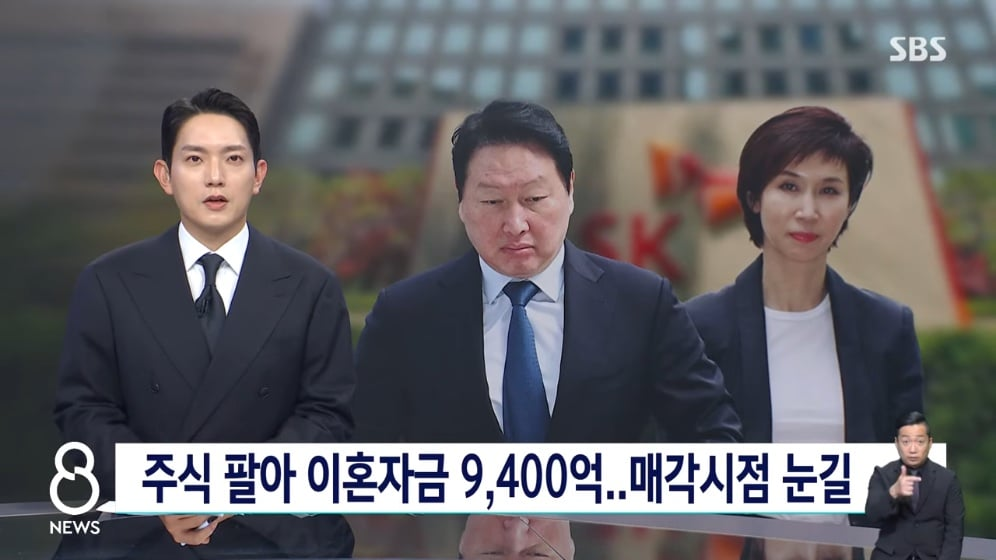
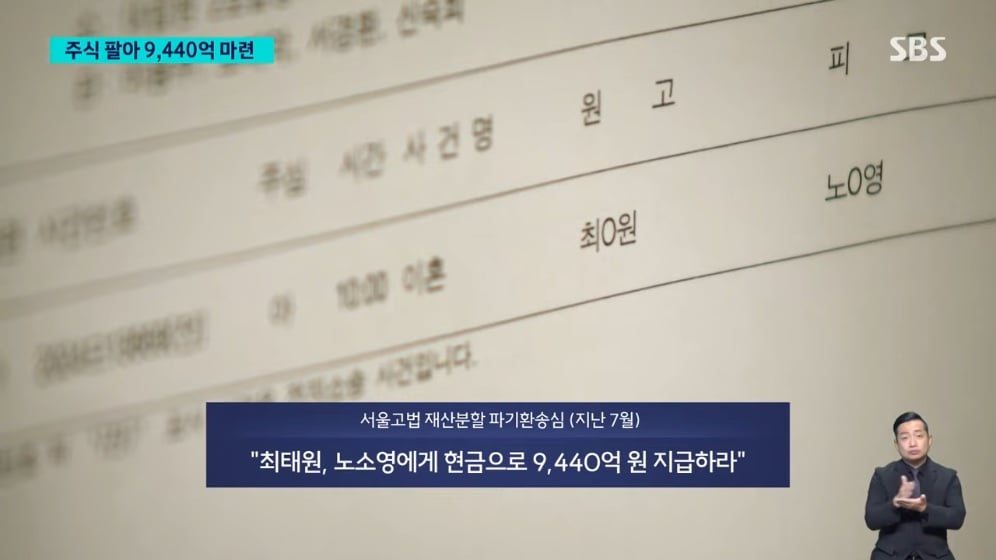
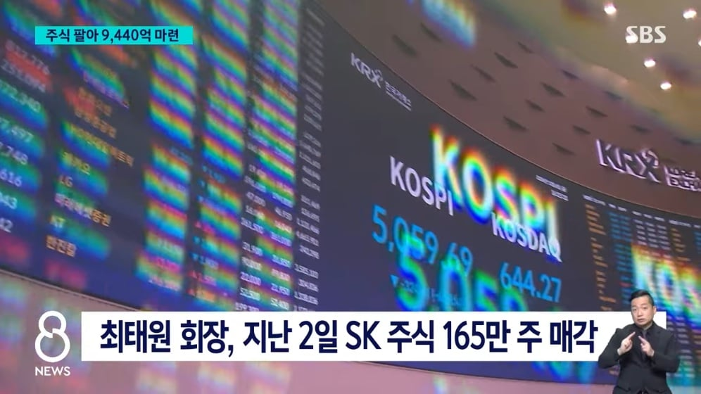
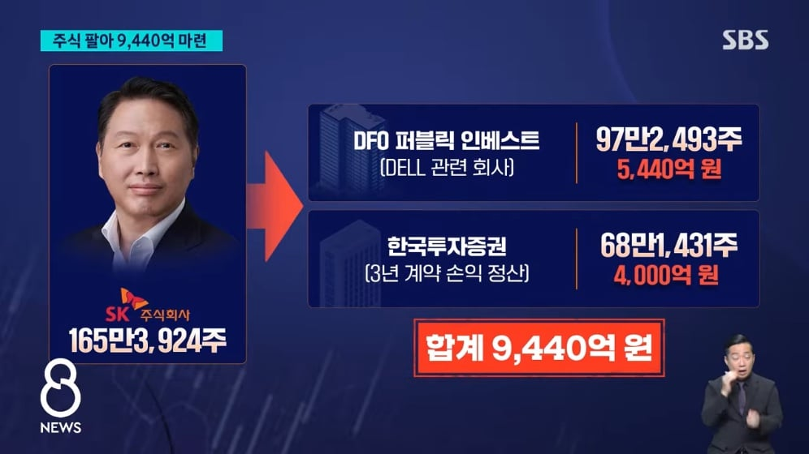
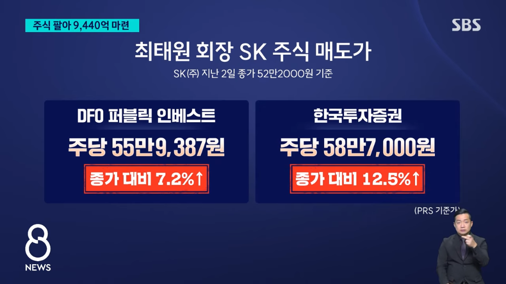
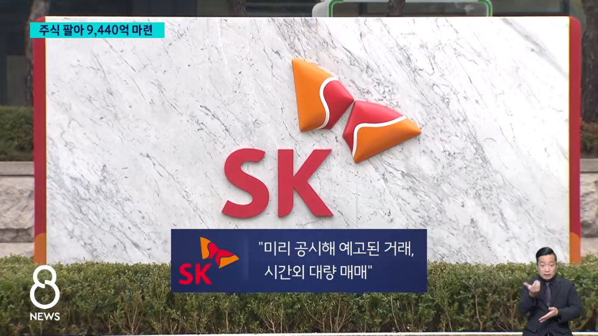
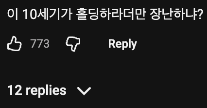
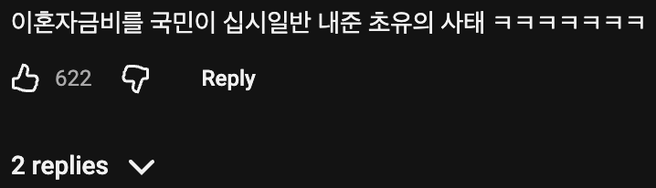
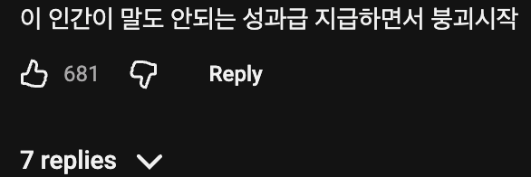
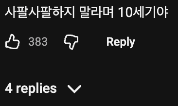

현금이라 ㄴㄴ
최가놈 위자료 낸다고 내 주식이 반토막 났다고
진짜 홀딩인 줄 알더라
???: 어쩌라고요
???: 내가 언제 사팔사팔하지말랬지 아예 팔지말랬어요?


저렇게까지 뜯기면서 이혼하나 했는데 태원햄... 사유가...
최태원은 신이다 ㄷㄷ
하이닉스는 안팔았네
개미는 절대 못이기고 잘된애들은 가위바위보 우승자같은거임ㅋㅋㅋ
주식대첩 ㄷㄷ
아이 난 또 하이닉스 팔았다는줄 알았네
Sk(주)가 최상위 지주회사라 사실상 그룹 지배권 팔아넘긴거랑 동일함.
홀딩이 아니라 홀딩스에 돈 넣으라는 소리였네 ㅋㅋㅋㅋㅋ
사팔사팔 하지말고
사팔 했어야지
떨어지는데 이유 붙이는 전형적인 케이스네ㅋㅋ
슈카 방송하면서 저매도 본거 같은데?
그건 하이닉스아님?
아 아니구나 큰매도 하나 있긴했는디
주식이 반토막나서 위자료도 반토막 난건가요?